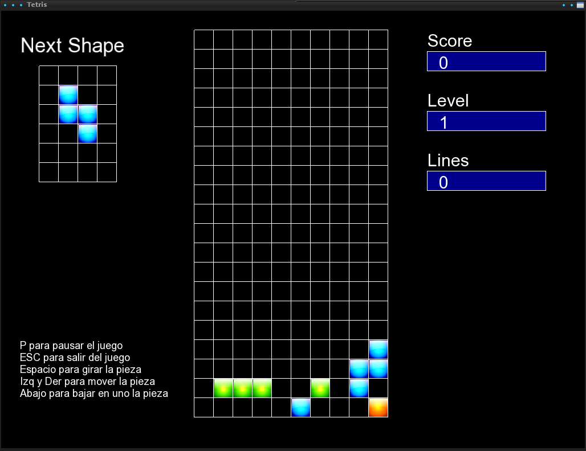
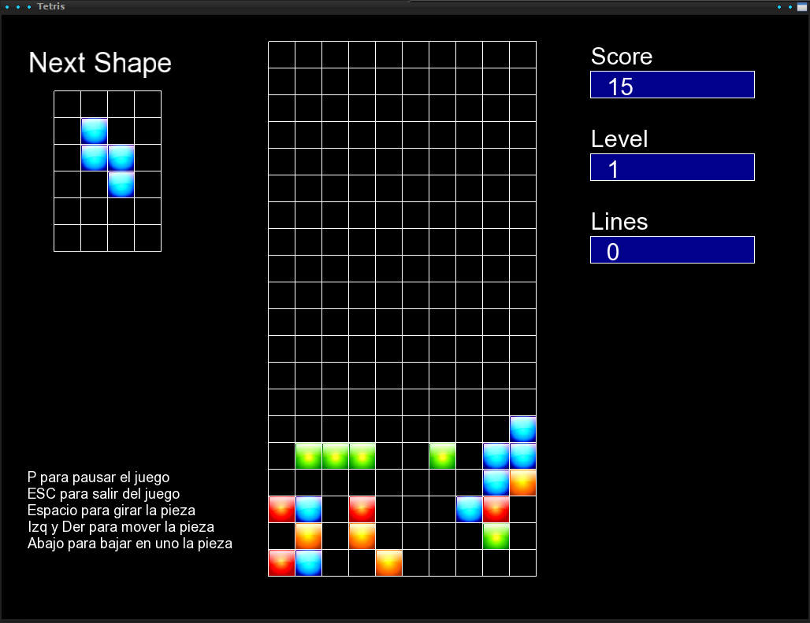
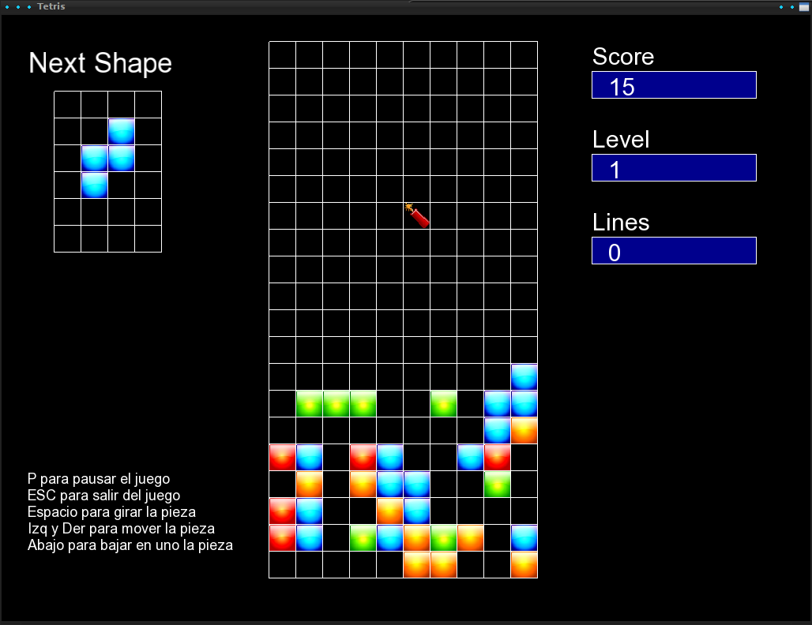

Realizado con C++ y SFML (inicialmente se hizo con SDL y luego se portó a SFML). Utiliza la librería boost para un par de funciones concretas.
Juego del tetris. Se realizó un clon del tetris inicialmente para posteriormente modificarlo y realizar un nuevo juego con base el tetris que consiste en una serie de animales sobre edificaciones que crecen hacia arriba. El objetivo es impedir que los edificios crezcan y llevar a los animales al suelo. Para ello además de piezas con los que eliminar lineas al estilo tetris, se tienen otros elementos que ayudan.
El juego está incompleto y con algún que otro bug. Tiene implementados algunos objetos con algunas funciones y la crecida de los edificios.
  